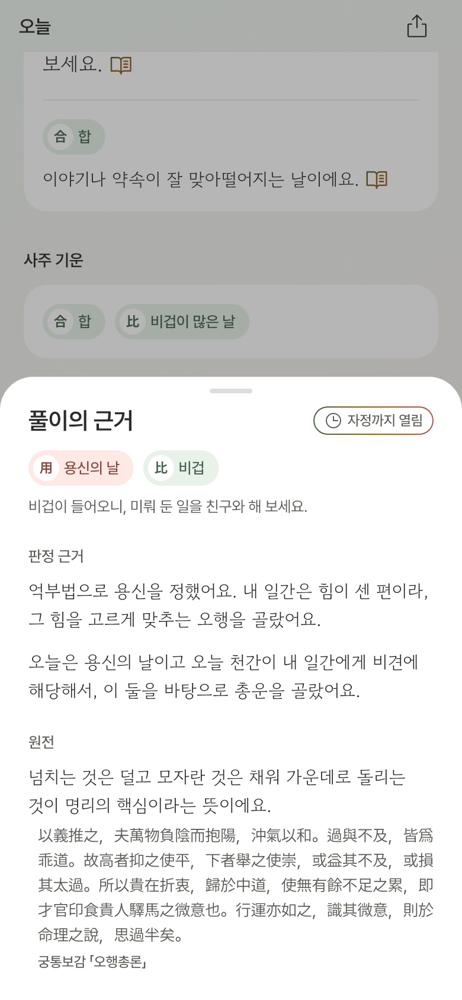
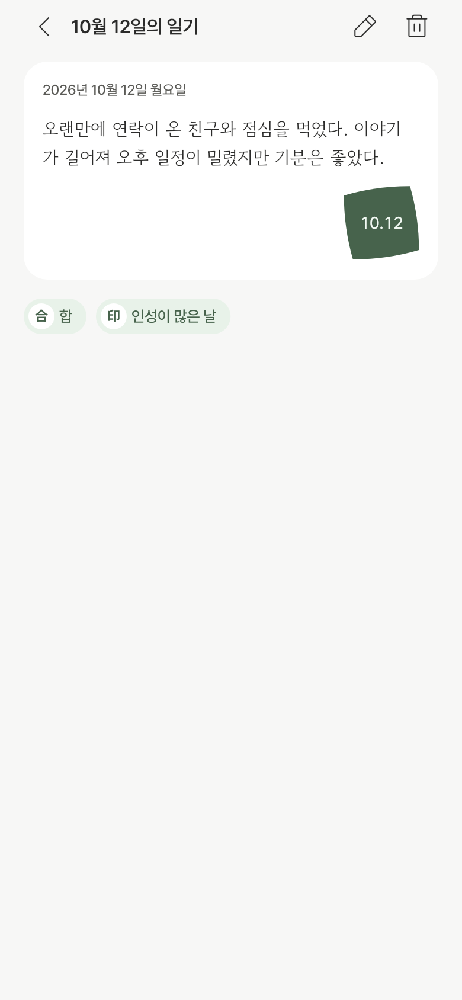

스토어 스크린샷 장면: 어느 화면을 어떤 순서로 (#1202, D133)
- 두 스토어 같은 장면, 같은 순서로 6장을 냅니다(App Store 최대 10, Play 2~8). 테두리 친 앞 세 장이 검색 결과에 보입니다.
- 화면은 app의 실제 렌더(대역 데이터
member등, 실존 인물 아님)입니다. 장면 위 글은 writing이 쓰고, 틀(배경, 기기 테두리, 글 자리)은 다음 질문에서 고릅니다. - 근거 시트 렌더는 D132 이전 판이라 꼬리표가 "자정까지 열림"입니다. 실제 이미지는 app이 #1179 반영 뒤 찍어 시각 문구로 나옵니다.
- 탭 화면 아래 배너 광고 자리는 실제 이미지에서 빼고 찍습니다(렌더의 빈 띠가 사라지고 탭 막대만 남음).
A. 오늘 먼저 (쓰는 순서)추천
첫 장이 앱의 중심(사람마다 다른 오늘)이고, 둘째 장이 다른 운세 앱과 갈리는 점(원전 근거), 셋째 장이 매일 쓰는 도구(달력)입니다. 검색 결과 세 장만으로 "무엇을, 왜 믿고, 어떻게 쓰나"가 이어집니다.
 오늘내 사주로 조합한 오늘: 총운, 사주 기운, 행운today, default, member
오늘내 사주로 조합한 오늘: 총운, 사주 기운, 행운today, default, member
근거 시트 (열림)판정 근거와 원전 인용. 근거를 보여 주는 앱evidence-sheet, unlocked, evidence-unlocked 달력한 달 길흉을 날짜 칸 채우기로calendar, default, member
달력한 달 길흉을 날짜 칸 채우기로calendar, default, member 그날 시트그날 길흉판정과 일정, 일기를 한곳에day-sheet, default, member
그날 시트그날 길흉판정과 일정, 일기를 한곳에day-sheet, default, member 나의 사주원국과 오행 분포, 성향 풀이my-saju, default, member
나의 사주원국과 오행 분포, 성향 풀이my-saju, default, member 공유 미리보기오늘 카드를 이미지로 공유share-preview, default, member
공유 미리보기오늘 카드를 이미지로 공유share-preview, default, memberB. 근거 먼저 (차별점 앞세움)
원전 한문이 첫 장이라 눈에 띄지만, 처음 보는 사람에게 무슨 앱인지(오늘 운세와 일기)는 둘째 장에서야 나옵니다. 한문 밀도가 높아 첫인상이 어렵게 보일 수 있습니다.
오늘내 사주로 조합한 오늘: 총운, 사주 기운, 행운today, default, member나의 사주원국과 오행 분포, 성향 풀이my-saju, default, member달력한 달 길흉을 날짜 칸 채우기로calendar, default, member그날 시트그날 길흉판정과 일정, 일기를 한곳에day-sheet, default, member공유 미리보기오늘 카드를 이미지로 공유share-preview, default, memberC. 일기 먼저 (기록 앱 앞세움)
일기장 성격이 앞에 서지만, 데모 일기는 한 편이라 화면이 비어 보이고(일기 보기), 근거는 마지막이라 검색 결과에서 보이지 않습니다.
오늘내 사주로 조합한 오늘: 총운, 사주 기운, 행운today, default, member그날 시트그날 길흉판정과 일정, 일기를 한곳에day-sheet, default, member
일기 보기쓴 일기에 그날 기운 태그가 붙음diary-view, default, member달력한 달 길흉을 날짜 칸 채우기로calendar, default, member나의 사주원국과 오행 분포, 성향 풀이my-saju, default, member